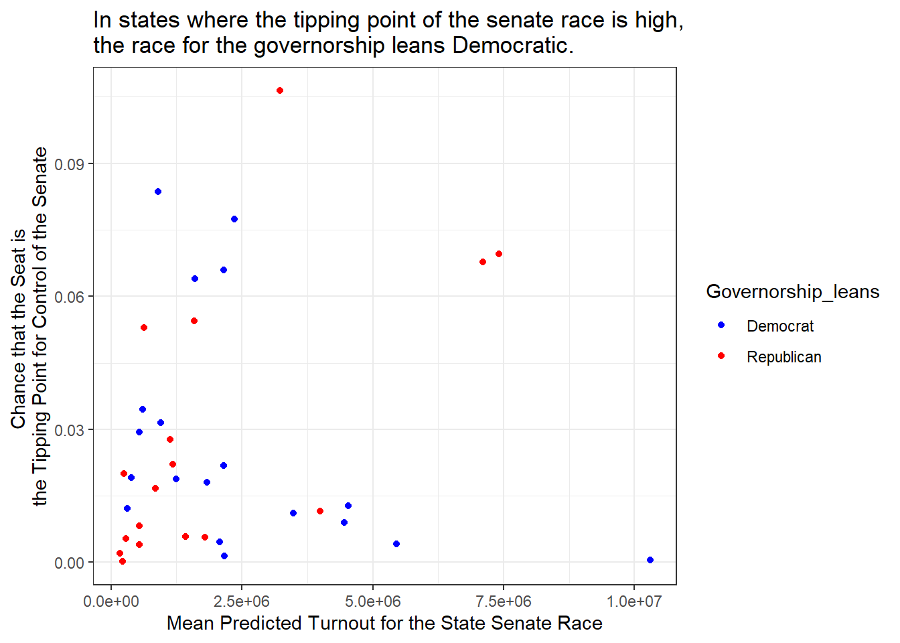

library(tidyverse)── Attaching packages ─────────────────────────────────────── tidyverse 1.3.2 ──
✔ ggplot2 3.3.6 ✔ purrr 0.3.4
✔ tibble 3.1.8 ✔ dplyr 1.0.9
✔ tidyr 1.2.0 ✔ stringr 1.4.1
✔ readr 2.1.2 ✔ forcats 0.5.2
── Conflicts ────────────────────────────────────────── tidyverse_conflicts() ──
✖ dplyr::filter() masks stats::filter()
✖ dplyr::lag() masks stats::lag()library(ggplot2)
library(dplyr)
gov_df<-readr::read_csv('governor_state_toplines_2022.csv', show_col_types = FALSE)
#head(gov_df)
#decide if the state is likely to have a democrat or republican governor
gov_df$Governorship_leans <- with(gov_df, ifelse(winner_Rparty < winner_Dparty, 'Democrat', 'Republican'))
# #filter to a specific date
date<-'9/17/2022'
gov_df_91722 <- dplyr::filter(gov_df, forecastdate == date)
gov_df_91722 <- dplyr::filter(gov_df_91722, expression == '_lite')
gov_df_91722# A tibble: 36 × 88
cycle branch distr…¹ forec…² expre…³ name_D1 name_D2 name_D3 name_D4 name_I1
<dbl> <chr> <chr> <chr> <chr> <chr> <lgl> <lgl> <lgl> <chr>
1 2022 Govern… WY-G1 9/17/2… _lite Theres… NA NA NA Jared …
2 2022 Govern… WI-G1 9/17/2… _lite Tony E… NA NA NA Joan E…
3 2022 Govern… VT-G1 9/17/2… _lite Brenda… NA NA NA <NA>
4 2022 Govern… TX-G1 9/17/2… _lite Beto O… NA NA NA <NA>
5 2022 Govern… TN-G1 9/17/2… _lite Jason … NA NA NA <NA>
6 2022 Govern… SD-G1 9/17/2… _lite Jamie … NA NA NA Tracey…
7 2022 Govern… SC-G1 9/17/2… _lite Joe Cu… NA NA NA Bruce …
8 2022 Govern… RI-G1 9/17/2… _lite Daniel… NA NA NA <NA>
9 2022 Govern… PA-G1 9/17/2… _lite Josh S… NA NA NA <NA>
10 2022 Govern… OR-G1 9/17/2… _lite Tina K… NA NA NA <NA>
# … with 26 more rows, 78 more variables: name_R1 <chr>, name_R2 <chr>,
# name_R3 <lgl>, name_R4 <lgl>, name_O1 <chr>, winner_D1 <dbl>,
# winner_D2 <dbl>, winner_D3 <dbl>, winner_D4 <dbl>, winner_R1 <dbl>,
# winner_R2 <dbl>, winner_R3 <dbl>, winner_R4 <dbl>, winner_I1 <dbl>,
# winner_O1 <dbl>, winner_Dparty <dbl>, winner_Rparty <dbl>, tipping <dbl>,
# vpi <dbl>, mean_predicted_turnout <dbl>, p90_simmed_turnout_gross <dbl>,
# p10_simmed_turnout_gross <dbl>, voteshare_mean_D1 <dbl>, …#Question: In states where the vpi is high, that is an individual vote will determine the outcome of the senate race, and the tipping point is high, that is chance that the seat is the tipping point for control of the race, are the governors more likely to be Democrat or Republican?
ggplot2::ggplot(data = gov_df_91722, mapping = aes(mean_predicted_turnout, tipping))+ geom_point(aes(color=Governorship_leans))+scale_color_manual(values = c("Democrat" = "blue", "Republican" = "red"))+theme_bw()+ggtitle("In states where the tipping point of the senate race is high,
the race for the governorship leans Democratic.")+labs(x="Mean Predicted Turnout for the State Senate Race", y='Chance that the Seat is
the Tipping Point for Control of the Senate' )